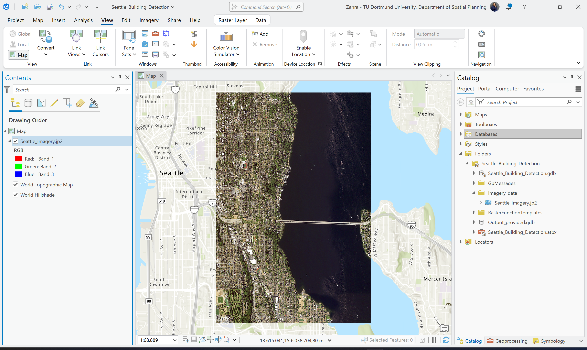
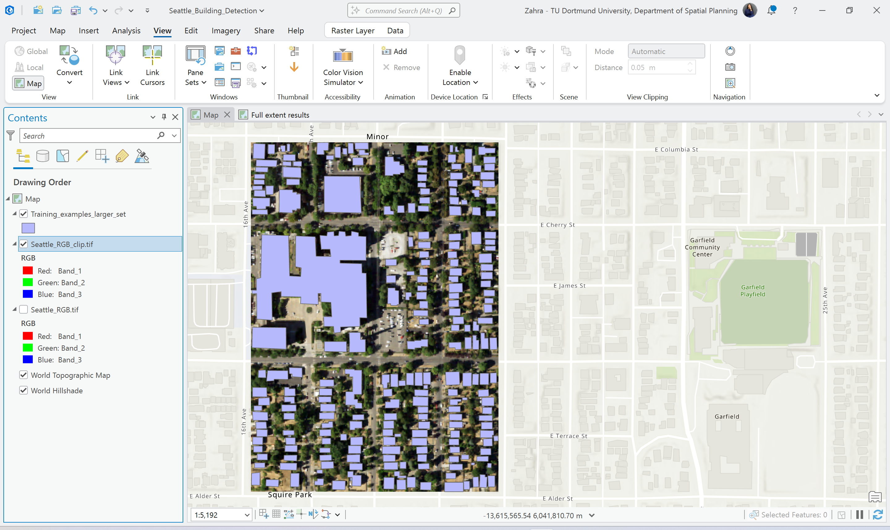
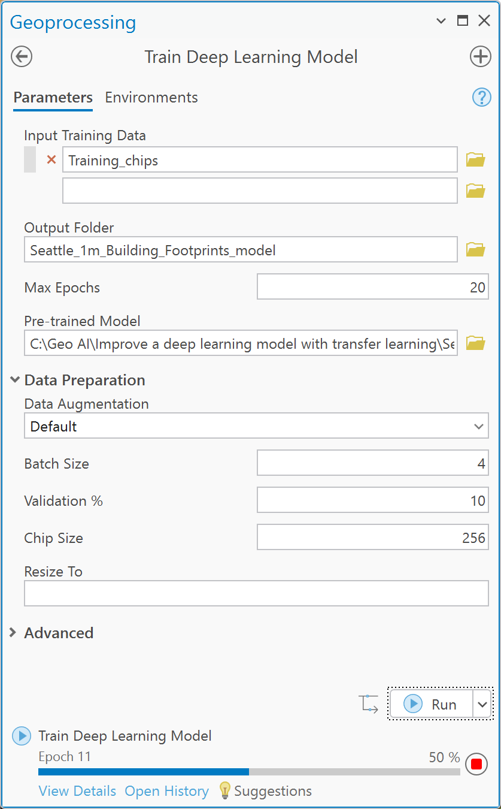

Building Extraction with Transfer Learning
This project focuses on improving building footprint detection using transfer learning in ArcGIS Pro. A pretrained deep learning model was fine-tuned with custom training samples to improve extraction quality.
View Interactive Web AppInput Data

RGB Extraction

Training Samples

Before Transfer Learning

Model Training

After Transfer Learning